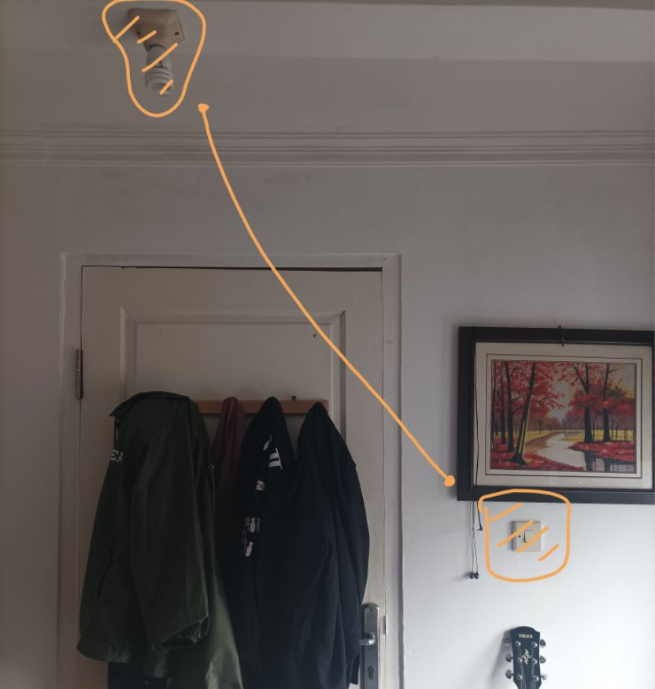
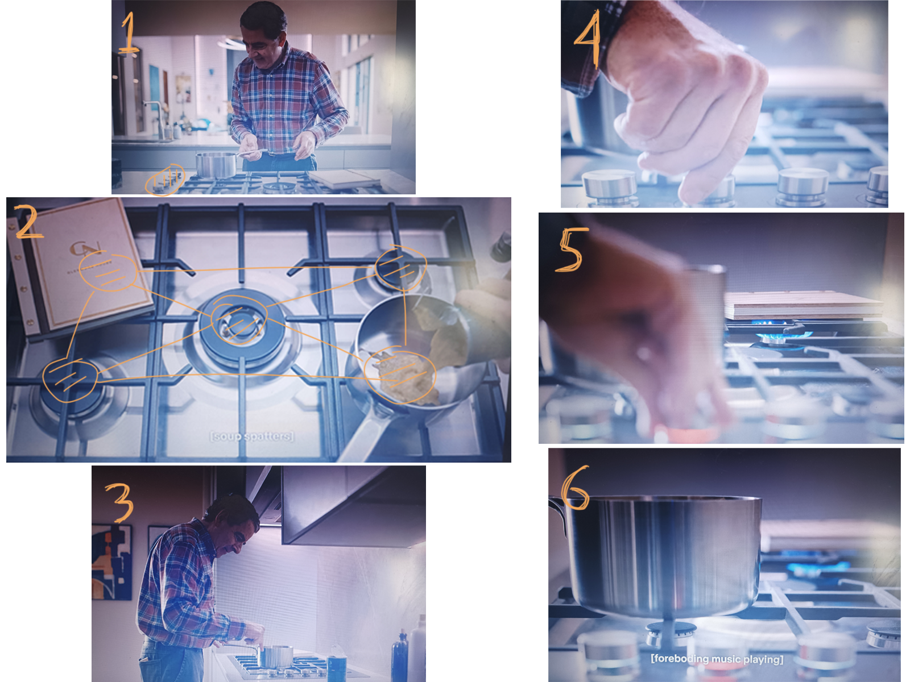
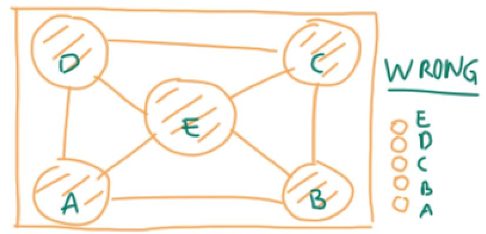
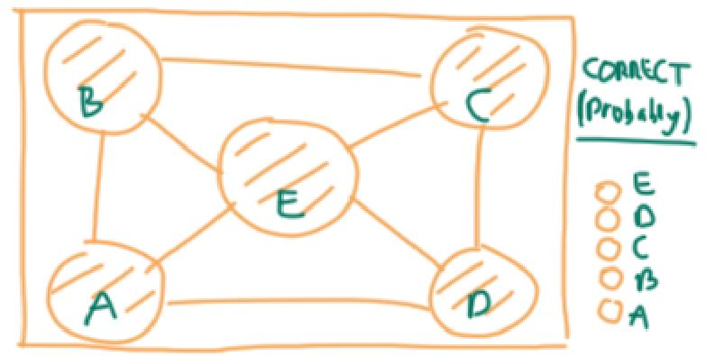
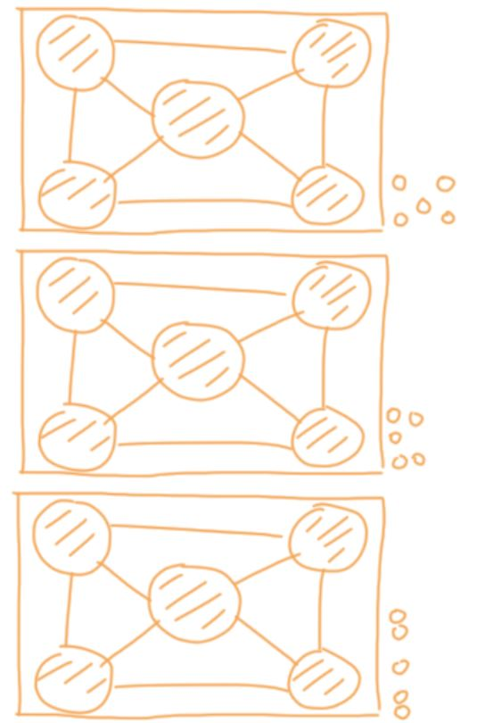

Fundamental Principles of Design
Mapping is a relationship between the elements of two sets of things. Here are some examples:
We have a conceptual model: for turning on the light in the room, there should be a switch somewhere in the same room. But since there is only one light and one switch in this room, it's pretty obvious this only switch is for turning on the only light in the room. Moreover, the switch is not hard to find and is placed as near as possible to the light.
The man in these pictures is Trevor Bingley (played by Rowan Atkinson) from the TV series Man Vs Bee. Trevor is a house-sitter who was hired by a rich couple to house-sit their house while they are away. As a stranger in the house, Trevor was not familiar with the house, because obviously the house is not his.
In one of the scenes in episode 1, Trevor heads to the kitchen and try to cook some meal. Here's where mapping fails:
Trevor knows how stove in general works. He has the conceptual model of how stove works: stoves have as many knobs as the burner. If there are 4 burners, there must be 4 knobs to turn them on, 5 burners - 5 knobs.
Trevor's initial assumption was the relationship between the knobs and the burners is like the picture above. That was why he tried to turn knob B to activate burner “B”.
But he was wrong, because the burner “B” that he initially thought was actually burner D. And he had to turn the second knob from the top instead.
What can we fix from the design? Here are some examples of the knobs layout so that the stove can be used more intuitively with no confusion.
Reference(s): The Design of Everyday Things by Don Norman